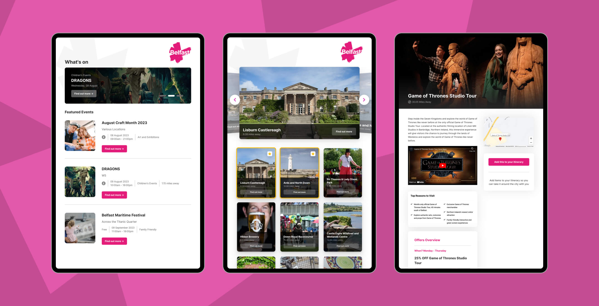
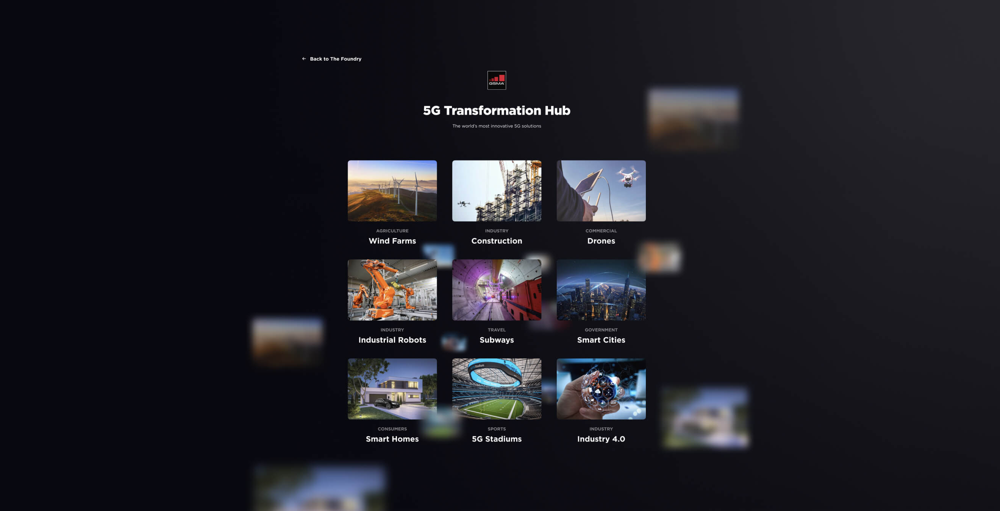
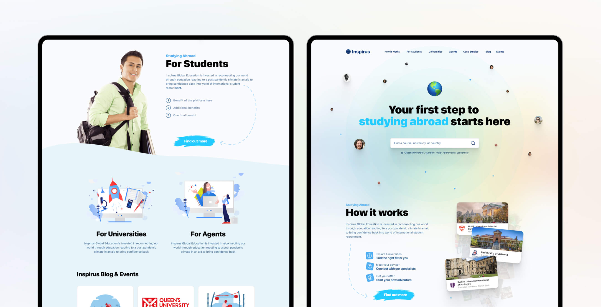

A selection of three different screens from a project where I worked with VisitBelfast to
design a large touchscreen interface which allowed users to interact and find events in the city of
Belfast.

The GSMA 5G Hub, this particular design, much like the GSMA foundary was also projected onto a
giant screen, but instead focused more on the benefits of 5G and mobile connectivity.


A privately owned project named Inspirus which was designed and aimed to become a
one-stop-shop for students looking to apply to Universities around the world.